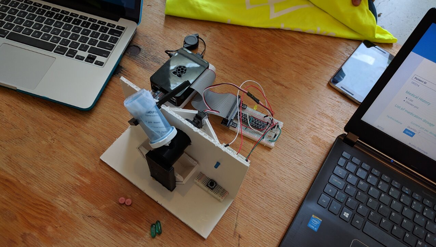

Medical Dispenser is a project created September 17-18, 2016 for Lumohacks, a cancer-centric hackathon.
Creators and Source Code
The creators of this project are Bradley Dalrymple, Jeffrey Leung, Carlson Chan, Kieran McCormick, and Jack Chao.
The GitHub organization containing all the code written for this project is lumohacks-med-disp.

Vision
Cancer is an arduous ordeal, not only for the patient but also for their family, their friends, and the medical staff who attend to them. It is made no easier by the fact that sensitive medications such as painkillers must often be dispensed by trained medical professionals so that the dosages given are constant and carefully regulated, and this requires that both the patients and their medication be supervised by medical staff. This issue may impart upon the patient a feeling of loss of control, as they cannot go home with their medicine and must be supervised closely, and will also require valuable time and attention of medical staff.
We envisioned a solution allowing patients to receive their medicine through a device which they could bring home and use easily, which would give the patient and their family significantly greater control and peace of mind. The patient's doctor would have the ability to remotely configure the dosage and scheduling of their patients' medications as necessary, so the dispensals would be regulated with little to no effort on the part of the patient or the medical professionals.
Solution and Implementation
As our response to this issue, we designed, architected, and implemented a fully-working prototype with a complete full-stack solution consisting of a dynamic webpage, an online database, and a custom-built, partially 3-d printed hardware medicine dispenser.
Web Application
In order to give doctors the ability to configure and reschedule a patient's dosages we created a web application designed to be quick, intuitive, and easy to use. In the application, each patient is identified by their patient ID, an arbitrary and unique value. The medical history and number of current medications is displayed for context. Each medication currently prescribed to a given patient is described with its name, pills per dosage, dosages per day, and next dosage dispensal time, and the doctor can freely configure the values for the pills per dosage and dosages per day.
Click the Patients tab above to use the live web application. The time until the next dosage dispensal is only usable in an accurate fashion when paired with the running dispenser program, so this feature is not currently functional.
You can see the source code for this page at this link.
Database

To share patient data from the web application to the dispenser, we used a Google Firebase database. This allowed us significant control over the structure and type of data that we could use and manipulate. You can view the raw data in JSON form by clicking here, and our instructions for how to set up the database from scratch are described here.
Dispenser (Hardware)
To build our dispenser, we utilized a Raspberry Pi 2 computer, a servo motor, a speaker, a switch, and two LEDs. You can find the circuit schematic here.

Constructing the physical dispenser proved to be one of the most challenging tasks of the project. We designed 4 pieces as the core of the dispenser mechanism and created 3-D STL models for them (available here on GitHub), which we printed during the hackathon with the help of Gallium Academy. After almost half a day of experimenting, failing, and learning, we were able to construct a sturdy model to demo at the presentation. Our build allows pills of various size to be fed into a rotating holder from a standard-size pill bottle and dispensed by a precise 180° rotation by the servo motor.
We provided two LEDs and a speaker as auxiliary components. The purpose of one of the LEDs is to display the on/off status of the system, while the other LED and the speaker are used to alert the user that a dispensal is ready. As an emergency measure, we also provided a button which the patient can press to dispense their usual dosage, in case of a failure or disconnection in the system.
Final Product
Below is a demonstration where we set a dosage of two pills (two dispensals by the machine):
Disclaimer
This About page was created after the hackathon's completion.
Learn more about the patient by clicking on their patient ID, Name or Number of medications.
You can easily adjust the patient's medication dosage by adjusting the quantity.
| Patient ID | Name | Number of medications |
|---|---|---|